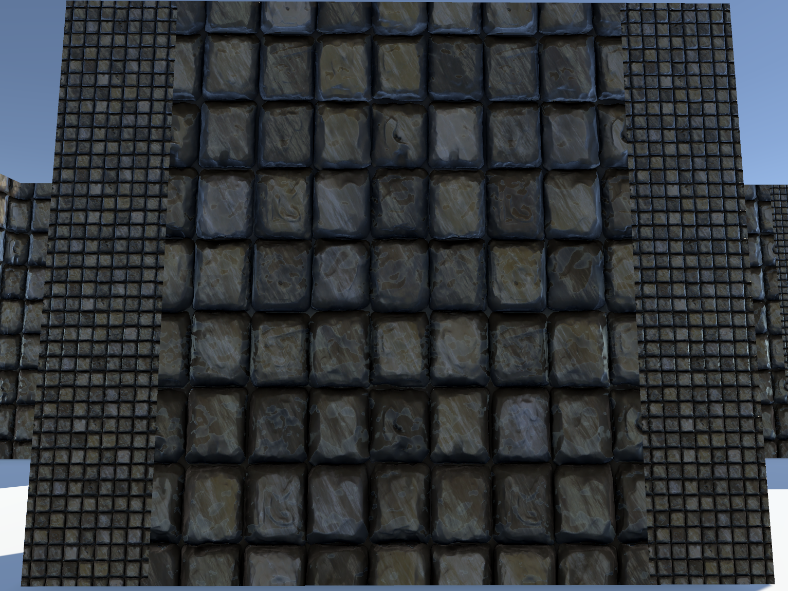
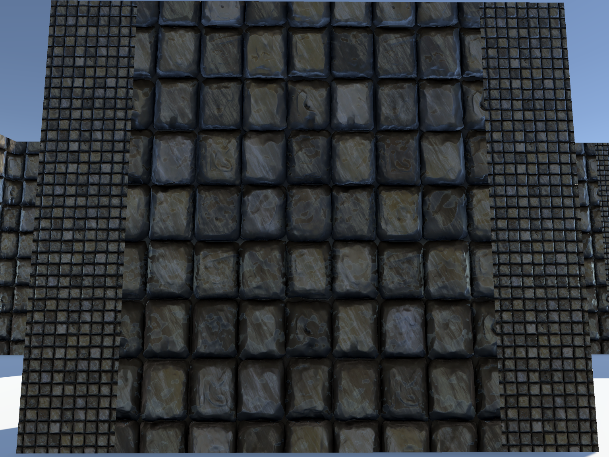

3DEscapeAdventure
General idea
The idea of the game is the following scenario: The game character finds himself in some kind of ancient ruin and is stuck there. After a small adventure, the player finds a locked exit, but to open it, the player needs to find several different objects related to the ruin. Some objects the player can find directly by exploring the ruins, while some are locked behind a puzzle. The player may also discover that he is not completely alone... The game is implemented with the Unity game engine version 2021.3.19f1.
Player and camera movement
At first, I started to work on basic first-person movement and camera control. I did some research to how to best implement this and so I started to work on it according to a certain YouTube tutorial. First things went well, I got my player character to move using WASD and I was also able to control camera. However, problems came forth with player jumping. It kind of worked, except falling down worked weirdly. At that time, I was using Rigidbody -component for my player character and for the jumping I used raycasting to detect when player was on the ground and vice versa. So going up went well, but when player character started to fall down, it for some reason slowed down and so came back to ground kind of slowly. I couldn’t get it to work properly, no matter the tweaking and researching, so I scrapped that and went with another method. I did deduce that the problem was in the raycasting mechanic, but for what reason I'm not sure. Instead of using Rigidbody, I started to use Character controller. So instead of using “actual physics”, I can determine myself how the player moves in the game. It is a good and a bad thing. Now I have to do all the movement settings myself, but I do have more freedom when it comes to it. With this method player basic movement was done and it works.
Code for basic player & camera movement
// Player basic movement script
using System.Collections;
using System.Collections.Generic;
using UnityEngine;
public class PlayerMovement : MonoBehaviour
{
public CharacterController controller;
public float speed = 12f;
public float gravity = -9.81f;
public float jumpHeight = 3f;
public Transform groundCheck;
public float groundDistance = 0.4f;
public LayerMask groundMask;
Vector3 velocity;
bool isGrounded;
// Start is called before the first frame update
void Start()
{
}
// Update is called once per frame
void Update()
{
isGrounded = Physics.CheckSphere(groundCheck.position, groundDistance, groundMask);
if (isGrounded && velocity.y < 0)
{
velocity.y = -2f;
}
float x = Input.GetAxis("Horizontal");
float z = Input.GetAxis("Vertical");
Vector3 move = transform.right * x + transform.forward * z;
controller.Move(move * speed * Time.deltaTime);
if (Input.GetButtonDown("Jump") && isGrounded)
{
velocity.y = Mathf.Sqrt(jumpHeight * -2f * gravity);
}
velocity.y += gravity * Time.deltaTime;
controller.Move(velocity * Time.deltaTime);
}
}
// Basic first-person camera control script
using System.Collections;
using System.Collections.Generic;
using UnityEngine;
public class CameraMovement : MonoBehaviour
{
public float mouseSens = 100f;
public Transform playerBody;
float xRotation = 0f;
// Start is called before the first frame update
void Start()
{
Cursor.lockState = CursorLockMode.Locked;
}
// Update is called once per frame
void Update()
{
float mouseX = Input.GetAxis("Mouse X") * mouseSens * Time.deltaTime;
float mouseY = Input.GetAxis("Mouse Y") * mouseSens * Time.deltaTime;
xRotation -= mouseY;
xRotation = Mathf.Clamp(xRotation, -90f, 90f);
transform.localRotation = Quaternion.Euler(xRotation, 0f, 0f);
playerBody.Rotate(Vector3.up * mouseX);
}
}
Main and pause menu
After implementing player & camera movement and testing it, I started to make some menu functionality. When the game starts, it opens in the main menu. From there the player has few options. They are able to start a new game, go to options and quit the game. Load game -button also exists, but it only has confirmation box and error for not founding a saved game. Clicking the New game -button opens a confirmation box and clicking Yes opens Level1, but clicking No brings you back to main menu. Options -button opens up an options screen, where you are in the current build able to change game master volume, game’s resolution and able to make it full screen or not. In the options menu, player is required to also apply full screen toggle and doing so brings up a placeholder image to lower right corner. There is also a reset -button, that resets the master volume to default value of 50. I also was meant to divide the volume to sound and music and I wanted to add sensitivity setting in there also. Pause menu itself only has resume and back to main menu -functions. I wanted to also be able to change settings in pause menu, but that was left as work in progress.
Code for basic main & pause menu
using System.Collections;
using System.Collections.Generic;
using UnityEngine;
using UnityEngine.UI;
using UnityEngine.SceneManagement;
using TMPro;
public class MenuController : MonoBehaviour
{
[Header("Volume Setting")]
[SerializeField] private TMP_Text volumeValue = null;
[SerializeField] private Slider volumeSlider = null;
[SerializeField] private float defaultVolume = 50f;
[Header("Graphics Setting")]
public TMP_Dropdown resolutionDropdown;
private Resolution[] resolutions;
[SerializeField] private Toggle fullScreenToggle;
private bool _isFullScreen;
[Header("Confirmation Box")]
[SerializeField] private GameObject confirmationPrompt = null;
[Header("Levels to load")]
public string newGameLevel;
private string levelToLoad;
[SerializeField] private GameObject noSavedGameDialog = null;
private void Start()
{
resolutions = Screen.resolutions;
resolutionDropdown.ClearOptions();
List options = new List();
int currentResolutionIndex = 0;
for (int i = 0; i < resolutions.Length; i++)
{
string option = resolutions[i].width + " x " + resolutions[i].height + " @" + resolutions[i].refreshRate + "hz";
options.Add(option);
if (resolutions[i].width == Screen.width && resolutions[i].height == Screen.height)
{
currentResolutionIndex = i;
}
}
resolutionDropdown.AddOptions(options);
resolutionDropdown.value = currentResolutionIndex;
resolutionDropdown.RefreshShownValue();
}
public void SetResolution(int resolutionIndex)
{
Resolution resolution = resolutions[resolutionIndex];
Screen.SetResolution(resolution.width, resolution.height, Screen.fullScreen);
}
public void NewGameDialogYes()
{
SceneManager.LoadScene(newGameLevel);
}
public void LoadGameDialogYes()
{
if (PlayerPrefs.HasKey("SavedLevel"))
{
levelToLoad = PlayerPrefs.GetString("SavedLevel");
SceneManager.LoadScene(levelToLoad);
}
else
{
noSavedGameDialog.SetActive(true);
}
}
public void ExitButton()
{
Application.Quit();
}
public void SetFullScreen(bool isFullScreen)
{
_isFullScreen = isFullScreen;
}
public void SetVolume(float volume)
{
AudioListener.volume = volume;
volumeValue.text = volume.ToString("0");
}
public void ApplyOptions()
{
PlayerPrefs.SetFloat("masterVolume", AudioListener.volume);
PlayerPrefs.SetInt("masterFullscreen", (_isFullScreen ? 1 : 0));
Screen.fullScreen = _isFullScreen;
StartCoroutine(ConfirmationBox());
}
public void ResetButton()
{
AudioListener.volume = defaultVolume;
volumeSlider.value = defaultVolume;
volumeValue.text = defaultVolume.ToString("0");
ApplyOptions();
}
public IEnumerator ConfirmationBox()
{
confirmationPrompt.SetActive(true);
yield return new WaitForSeconds(2);
confirmationPrompt.SetActive(false);
}
}
using System.Collections;
using System.Collections.Generic;
using UnityEngine;
using UnityEngine.UI;
using UnityEngine.SceneManagement;
public class PauseMenu : MonoBehaviour
{
[SerializeField] private GameObject pauseMenuUI;
[SerializeField] private bool _isPaused;
private void Update()
{
if (Input.GetKeyUp(KeyCode.Escape))
{
_isPaused = !_isPaused;
}
if (_isPaused)
{
ActivateMenu();
}
else
{
DeactivateMenu();
}
}
void ActivateMenu()
{
Time.timeScale = 0f;
AudioListener.pause = true;
pauseMenuUI.SetActive(true);
Cursor.lockState = CursorLockMode.None;
Cursor.visible = true;
}
public void DeactivateMenu()
{
Time.timeScale = 1f;
AudioListener.pause = false;
pauseMenuUI.SetActive(false);
_isPaused = false;
Cursor.lockState = CursorLockMode.Locked;
Cursor.visible = false;
}
public void BackToMainMenu()
{
SceneManager.LoadScene("MainMenu");
}
}
using System.Collections;
using System.Collections.Generic;
using UnityEngine;
using UnityEngine.UI;
using TMPro;
public class LoadPrefs : MonoBehaviour
{
[SerializeField] private bool canUse = false;
[SerializeField] private MenuController menuController;
[SerializeField] private TMP_Text volumeValue = null;
[SerializeField] private Slider volumeSlider = null;
[SerializeField] private Toggle fullScreenToggle;
private void Awake()
{
if (canUse)
{
if (PlayerPrefs.HasKey("masterVolume"))
{
float localVolume = PlayerPrefs.GetFloat("masterVolume");
volumeValue.text = localVolume.ToString("0");
volumeSlider.value = localVolume;
AudioListener.volume = localVolume;
}
else
{
menuController.ResetButton();
}
if (PlayerPrefs.HasKey("masterFullscreen"))
{
int localFullscreen = PlayerPrefs.GetInt("masterFullscreen");
if (localFullscreen == 1)
{
Screen.fullScreen = true;
fullScreenToggle.isOn = true;
}
else
{
Screen.fullScreen = false;
fullScreenToggle.isOn = false;
}
}
}
}
}
Level design and objects
At this point, I started to more clearly design the overall game layout. I wanted the game to have four different puzzle rooms that are all connected to each other and to the central main room, that would be used as the escape point after player collected all the objects that you could get after solving the puzzles. Every puzzle room holds one object needed to escape and all four would be required. For the puzzles themselves I had three ideas. One: jumping puzzle. Two: Labyrinth. Three: Sliding puzzle. As for the fourth room I had no ideas as of yet.
Building the labyrinth took longer than I excepted. For generating a layout, I used mazegenerator.net to generate a maze, which I then just placed as a plane in scene and I just started manually building the labyrinth. I built the walls using Unitys own objects and for its textures I used a texture from OpenGameArt.org. I planned to actually model the wall in 3dsMax, so that the wall actually would be just one object, but I didn’t get to it.
 

Last thing that I did for the project was the altar, where the player would place the necessary objects in order to escape the place. I did it using 3dsMax and as for the textures I once again got them from OpenGameArt.org. The altar itself wasn’t that hard to make, but I needed to research how to apply multiple materials on a single object so that I was able to use multiple textures on it. In 3dsMax it wasn’t that hard, first just setting polygon groups in correctly and then in material editor you are able to make a multi sub-material.
Summary
In short even though there isn't a lot to see from this project, I still learned a lot. The most pressing matter on why I chose to end this project and to start a new one is the approach and management. I didn't have a clear plan and so jumped from module to module. This is something that I want to and need to get better at. Also immediately at the beginning of the project I realized that I bit too much too soon. I had this grand vision of a game, that just isn't possible for me to create at this point of time. Also I would need a lot more time, which itself isn't a problem, but during these studies I want to dip my nose to as many things as I can, so making one huge project would not serve my study goals. But the most important lesson from this project truly is proper planning and managing, which will take priority in the next project. I also need to make more time to report properly my work, most likely just writing minireports every time I do something for the project. It will help my workload more and I will have clearer vision of what I have done and what needs doing. This will also help me learn better. If I leave reporting to the last minute, it will reflect poorly and insted of being helpful for learning and future projects, it will just create additional stress.